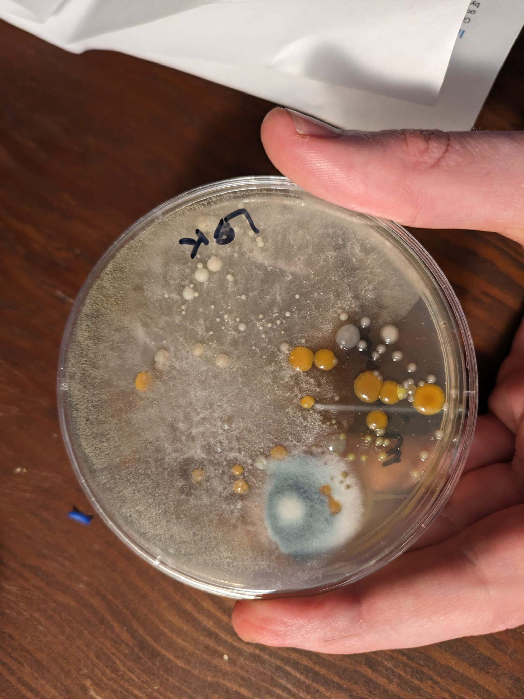

DIY Bio: A Cool Hobby, Not Quite For Me
Dipping My Toes into DIY Bio
I’ve been dabbling with DIY biology, trying to modify some genes in ecoli and generally just messing about. Doing something like “making bacteria/yeast that glow under UV” is suprisingly common and looks easy at first glance - just mix the right things together with suitable wait times and temperatures between steps… There are even companies that will ship you kits with all the bits you need - I got a kit from The ODIN who are trying to make all of this more accessible.

It’s my firm belief when cooking that most recipes are needlessly over-complicated and rife with superstition. If you understand what’s actually going on, you can simplify and substitute and often end up with a better result. I have to confess I had a feeling the same might be true for bio stuff - these people seem so obsessed with their exact measurements and protocols, and the focus on sterility seems completely overkill… Spoiler alert: I now see where they’re coming from! There are a few things that contribute to this being more difficult that it seems at first. Let’s dig in.
What do you mean ‘it takes a week’?
A key issue is iteration time. If you miss a line of code, your program usually errors out right away. If you get a step wrong trying to edit DNA, you only know about it a few days later when you see another petri dish full of normal-looking bacteria refusing to do what you want them to. This makes it a lot harder to hack around and try different things quickly. If you think ahead you can try multiple things in parallel, but it’s still a pain to have so little immediate feedback on what’s going on. I bet experienced people have more intuition - this smells like the right strain, that looks too cloudy, the water bath feels just right.
One example that tripped me up: after adding the plasmid to my bacteria transformation mix, the protocol said something like “incubate at 37 degrees for… then mix and then spread on the plate…”. I forgot to shake up the tube, and had spread a few drops on one plate before I noticed that (of course) things had settled to the bottom of the tube. I mixed it up and then spread a few drops on another plate - sure enough I got growth on only the second plate. If you missed that one key phrase, you wouldn’t even know where you went wrong and 48 hours later you’d be scratching your head wondering what went wrong.
“Squishy” = “Not Very Deterministic”
Doing the same thing twice and (hopefully) getting the same result twice is a luxury I’m used to from software. In biology, it’s very easy for this to break. Your starting culture is different, things get contaminated very easily, and the real world interfears and makes it easy for things like ambient temperature to change between runs. This made me understand more the focus on controlling everything. Room temp probably didn’t mess that try up, but it’s one more thing I have to worry about - easier to just keep things incubated at a constant temp and eliminate that variable.

Same goes for sterility. You learn to do the dance of using gloves, sanitising evreything, using stuff once and disposing of it (I hate this part, it feels so wasteful). The alternative is cutting 10 corners, 9 of which might have made sense but the 10th one is the one that ruins your experiment. First try I was very blasé about this, keeping my plates at room temp, working on a dirty desk, etc. My most recent run I did a lot more ‘properly’ and got much better results. And I’d still probably need to work a lot harder to get to a point where I can be confident every time that I’m not contaminating things accidentally.
Harder to go off the beaten track
It’s one thing to follow someone’s protocol with their kit. But you’re very dependent on this third party. Part of this means there are things you can’t control (my first kit was from a batch that might have had some issues their side, thankfully they shipped a replacement). It also makes it harder to break out on your own. I can use the existing glowy plasmids, but if I want to design my own there’s a steep learning curve and a big price-tag ($$$$) involved for getting them made. Doable for a passionate few, but pretty intimidating fomr someone just wanting to dabble.
Conclusion
Anyway, those are just some rough thoughts. I’ve sterilized my plates and packed away my pipettes for now. This hobby seems super interesting but not quite suited to my personal temperment. Luckily for me I don’t have to abandon it completely though - I have friend deeper in the rabbit hole than myself and I think I can be content helping out with smaller things that I can be more confident of - making lab equipment, brainstorming together and that sort of thing. If we come up with something fun you may see more squishy science content here! For now, I’m off to dabble with the next potential hobby :)